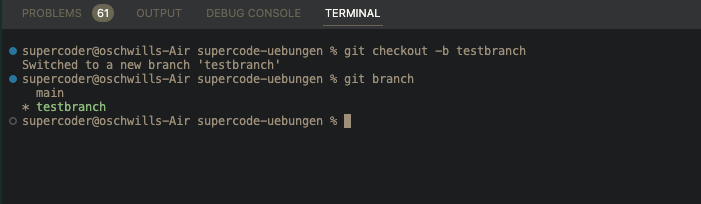
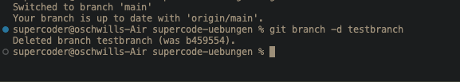
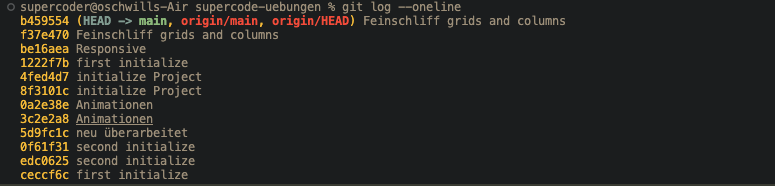

GIT USER
GIT BEFEHL
BESCHREIBUNG
ILLUSTRATION
git config --global user.name "[name]"
Setzt den Benutzernamen, den du an deine Commit-Transaktionen hängen willst
-
git config --global user.email "[email address]"
Setzt die Emailadresse, die du an deine Commit-Transaktionen hängen willst
-
REPOSITORY
GIT BEFEHL
BESCHREIBUNG
ILLUSTRATION
git init [project-name]
erstellt ein lokales Repository

git clone [url]
Hiermit klonen wir ein Projekt aus einem entfernten Repository einschließlich der gesamten Versionshistorie
-
ÄNDERUNGEN SYNCHRONISIEREN
GIT BEFEHL
BESCHREIBUNG
ILLUSTRATION
git add [file]
Indiziert den derzeitigen Stand der Datei für die Versionierung / mit [git add .] indiziert man alle geänderten oder neu erstellten Dateien
-
git reset [file]
Nimmt die Datei vom Index, erhält jedoch ihren Inhalt
-
git commit -m"[message]"
erstellt eine Beschreibung für die getrackte neue Version und nimmt diese in die Versionshistory auf (Die Message sollte die vorgenommene Änderung im Code beinhalten!!)
-
git fetch [remote]
Registriert ein externes Repository und holt sich die Repository History
-
git push [remote] [branch]
pusht den angegebenen Branch in das externe Repository
-
git pull
pullt die History vom externen Repository in unsere lokales Repository
-
git merge [remote]/[branch]
Hiermit intergrieren wir die angegebene branch in unserem branch in dem wir uns befinden

git rm [file]
Löscht die Datei aus dem Arbeitsverzeichnis und wird im Index zur Löschung markiert, dadurch wird die Datei beim nächsten commit aus der Versionskontrolle gelöscht
-
BRANCHES
GIT BEFEHL
BESCHREIBUNG
ILLUSTRATION
git branch [branch-name]
erzeugt einen neuen Branch
-
git branch
Listet alle lokalen Branches auf. Das * zeigt an in welchem Branch man sich befindet

git branch -d [branch-name]
Löscht den angegebenen Branch

git branch -D
Löscht unverzüglich den Branch ohne dabei auf die History(Änderungen) zu achten
-
git checkout [branch-name]
navigiert in die angegebene Branch
-
git checkout -b [branch-name]
Shorthand: erstellt den Branch und navigiert direkt hinein
-
LOG / HISTORY
GIT BEFEHL
BESCHREIBUNG
ILLUSTRATION
git log
Listet die Versionshistore für den aktuellen Branch
git log --all
listet dir alle commits(alle branches) an
-
git log --oneline
Listet dir alle commits in einer Zeile / mit "q" kommt man aus der Ansicht raus

git log --graph
Listet dir alle commits grafisch an / mit "q" kommt man aus der Ansicht raus
-